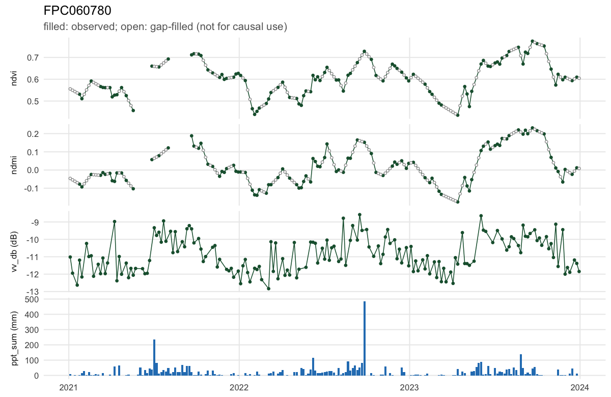
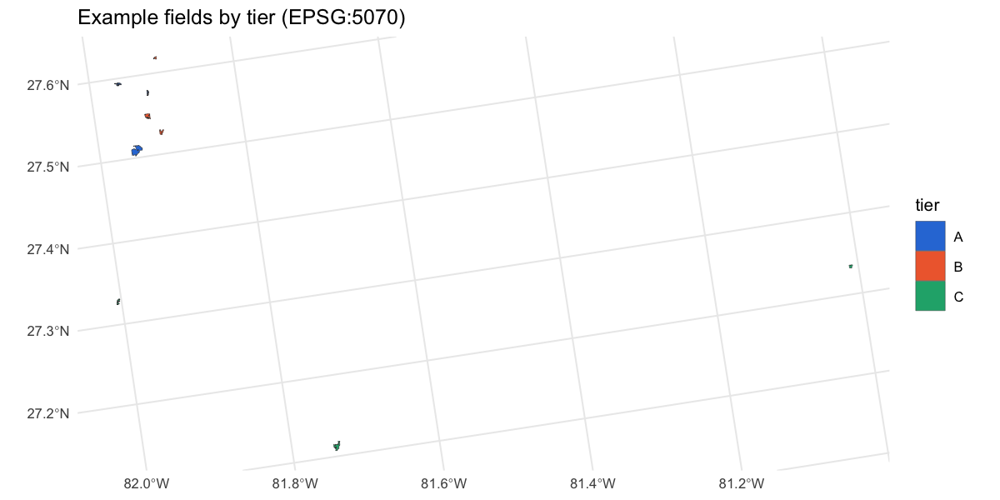
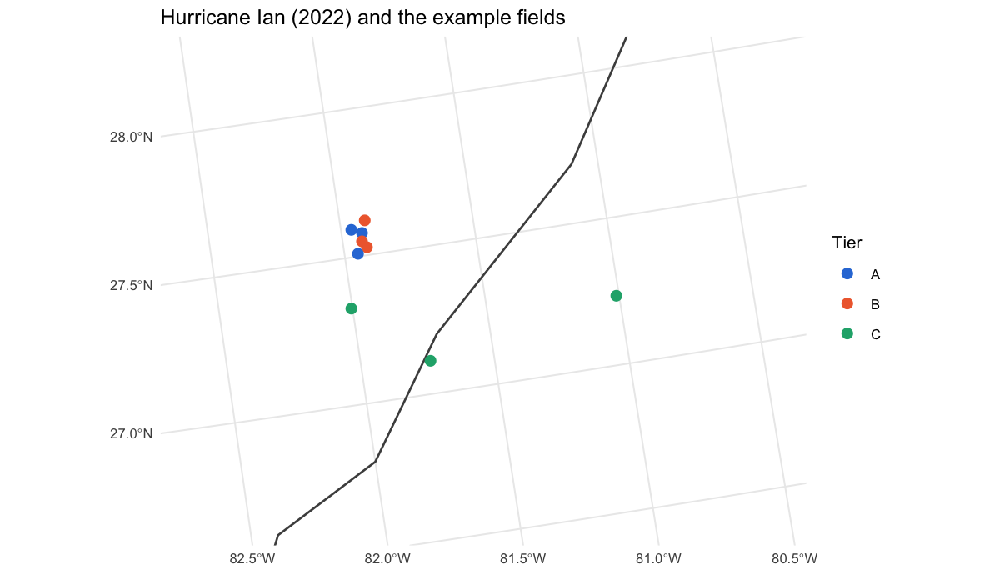
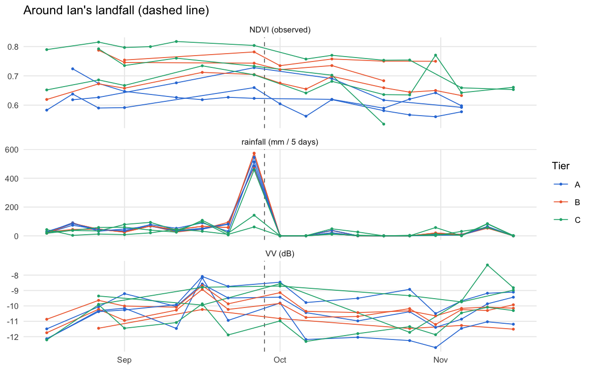
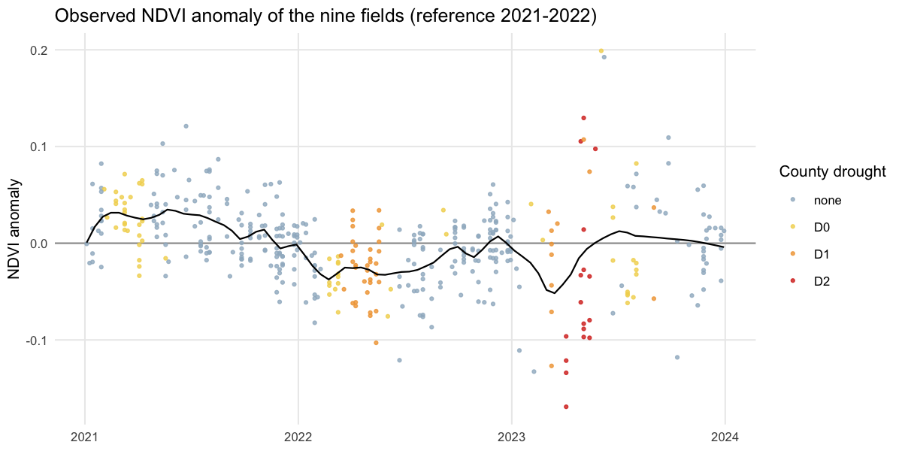
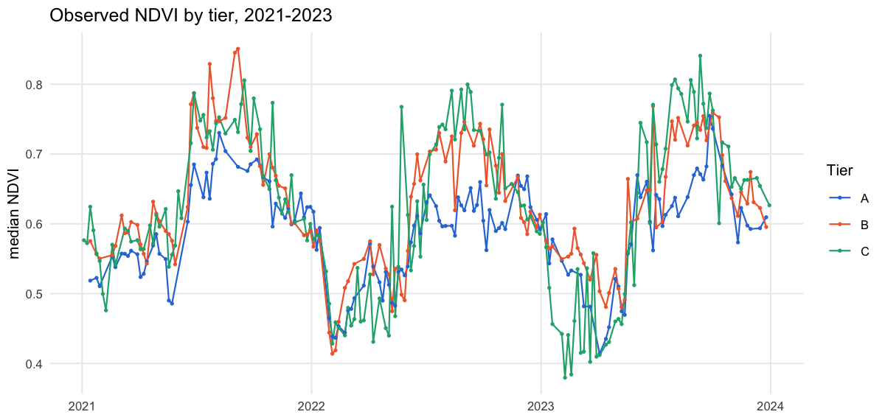
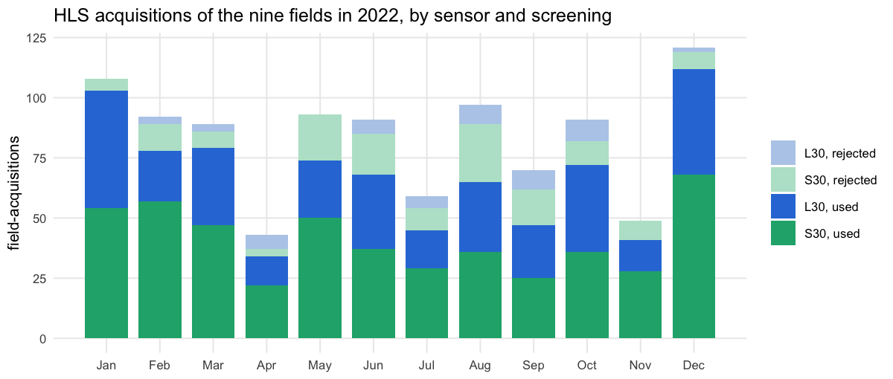
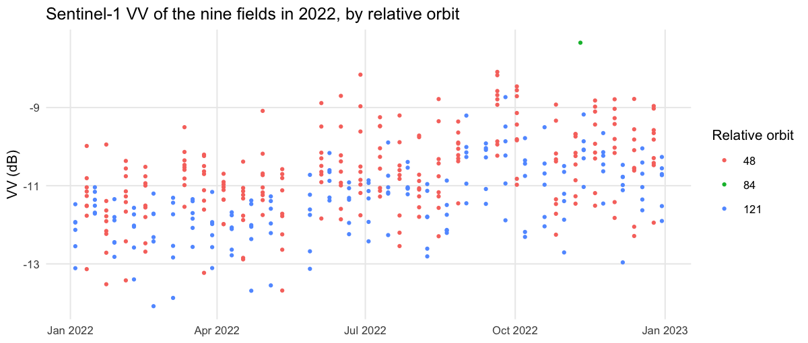
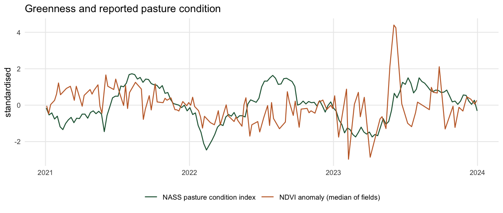

fpcubeR downloads and reads the Florida Pasture Cube in R.
The Florida Pasture Cube describes 62,847 persistent pasture fields in Florida (0.98 million ha) every 5 days from January 2016 to October 2026. For each field it holds:
- Optical: Harmonized Landsat and Sentinel-2 (HLS) reflectance and five spectral indices.
- Radar: Sentinel-1 backscatter.
- Weather: PRISM daily weather.
- Field attributes: soil, terrain and wetland attributes.
- Labels: county drought, state pasture condition and hurricane records.
Every composite can be traced to the satellite acquisitions it came from.
The package turns this into ordinary R data frames and sf objects. Its functions select fields, read time series and remove gap-filled values unless you ask for them. They also join the drought map, compute anomalies against each field’s own climatology, and plot fields and series.
| Data | Zenodo, 10.5281/zenodo.24542431, CC BY 4.0 |
| Processing code (Python) | github.com/HugoMachadoRodrigues/fpcube, 10.5281/zenodo.24542303 |
| This package | MIT licence, 10.5281/zenodo.24543602; documentation at hugomachadorodrigues.github.io/fpcubeR |
| Python | the module fpcube.read of the processing code reads the fields, composites, observations and labels (from version 1.3.1) and the lineage, validation and benchmark tables (development version) |
Installation
# install.packages("remotes")
remotes::install_github("HugoMachadoRodrigues/fpcubeR")The package needs arrow, sf, dplyr, curl, jsonlite and rlang. ggplot2 is needed only for the plots, and digest only for fpc_verify().
Quick start
library(fpcubeR)
# 1. Download the fields, the 5-day composites of 2022 and the labels (about 230 MB)
fpc_download(c("fields", "composites", "labels"), years = 2022)
# 2. Pick fields: tier A (parcels coded as grazing land) in Hardee County
f <- fpc_fields(tier = "A", county = "Hardee")
# 3. Read their NDVI, Sentinel-1 VV backscatter and rainfall, observed values only
x <- fpc_composites(f, vars = c("ndvi", "vv_db", "ppt_sum"), years = 2022)
# 4. Plot one field
fpc_plot_field(f$field_id[1], years = 2022)Every example below runs on a small real extract shipped with the package. It holds nine fields, three of each tier, from Hardee, DeSoto and Highlands counties. Composites cover 2021–2023, and observations and labels cover 2022. fpc_example_dir() points to it, so you can run the examples without downloading anything. With the full data, drop the dir = d argument.
library(fpcubeR)
d <- fpc_example_dir()The data in one page
Fields. A field is a connected part of persistent pasture inside one tax parcel, of at least 2 ha.
| Tier | Definition | Fields | Area |
|---|---|---|---|
| A | on parcels coded as grazing land | 41,976 | 745 kha |
| B | on other parcels, mapped as pasture in nearly every year | 10,073 | 133 kha |
| C | open pasture in the official land-use maps (FLUCCS) that the Cropland Data Layer maps as woody or wetland | 10,798 | 102 kha |
For a conservative set of grazing fields use tier A. Tier C contains wetter pastures. Owner information is never downloaded, and parcel identifiers are not distributed.
Calendar. Composites cover 5-day periods anchored on 1 January 2016, 791 periods to 29 October 2026. date is the first day of a period.
Composites. Each variable is a column, in four groups:
- Optical: HLS reflectance (blue to SWIR-2), NDVI, EVI, NDMI, MNDWI, NBR, the within-field NDVI standard deviation and the water fraction.
-
Counts:
n_optical_obs,gap_filledandn_radar_obs. - Radar: Sentinel-1 VV, VH and VH−VV in dB.
- Weather: PRISM 5-day rainfall, mean, minimum and maximum temperature, and maximum vapour-pressure deficit.
Gap-filling. Optical gaps of up to 30 days are filled by linear interpolation and flagged. An interpolated value uses the next observation, so it must not be used in forecasts or any analysis that has to be causal. fpc_composites() sets these values to NA by default.
Files on Zenodo.
Part (fpc_download(what = )) |
File(s) | Size |
|---|---|---|
"fields" |
fields.parquet |
27 MB |
"composites" |
composites_2016.parquet … composites_2026.parquet
|
about 200 MB per year |
"labels" |
labels.zip → labels/*.parquet
|
< 1 MB |
"optical" |
optical_observations.zip → one Parquet file per year |
4.0 GB |
"radar" |
radar_observations.zip → one Parquet file per year |
1.0 GB |
"lineage" |
lineage.parquet, field identifiers across versions |
1 MB |
"validation" |
validation.zip → the tables behind the validation of the paper |
8 MB |
"benchmark" |
benchmark.zip → samples, results and predictions of the benchmark |
27 MB |
"stac", "docs"
|
STAC catalog, DATASHEET.md and checksums |
< 1 MB |
"cube" |
cube.zarr.zip, the same composites as a Zarr store, for Python |
2.5 GB |
Functions
| Function | What it does |
|---|---|
fpc_download() |
downloads parts of the data set from Zenodo, checks the checksums and unpacks them |
fpc_files() |
lists the files of the Zenodo record with sizes and checksums |
fpc_dir(), fpc_set_dir()
|
the folder where the data are kept |
fpc_verify() |
checks the downloaded files against the release SHA-256 checksums |
fpc_example_dir() |
the small example shipped with the package |
fpc_fields() |
fields as an sf object, filtered by tier, county or identifier |
fpc_variables() |
name, group, units and description of every composite variable |
fpc_composites() |
5-day time series, wide or long, observed values only by default |
fpc_observations() |
per-acquisition optical (HLS) or radar (Sentinel-1) records |
fpc_labels() |
US Drought Monitor, NASS pasture condition, hurricane tracks and landfalls |
fpc_lineage() |
field identifiers across versions, with the version 1.0 parent of every field |
fpc_validation() |
the validation tables, including the official land use and WorldCover cover of every field |
fpc_benchmark() |
samples, results and predictions of the three benchmark tasks |
fpc_add_drought() |
adds the county drought class valid on each date |
fpc_climatology(), fpc_anomaly()
|
each field’s own seasonal climatology and the anomaly from it |
fpc_summarise() |
median (or another statistic) over fields for each date |
fpc_plot_field() |
time-series panels of one field |
fpc_map_fields() |
map of field polygons coloured by a column |
Getting the data
fpc_download()
fpc_download() downloads the parts you ask for from the Zenodo record into the data folder:
- It checks the MD5 checksum of every file.
- It unpacks the zipped folders, so the data folder has the same layout as the release.
- It skips files that are already present and intact, so running it again only completes what is missing.
The default downloads the fields, all composites and the labels. Use years to download only some years of the composites.
fpc_download() # fields + all composites + labels (~2.4 GB)
fpc_download(c("fields", "composites"), years = 2020:2022) # three years only
fpc_download("optical") # per-acquisition HLS records (4 GB)
fpc_download("docs") # DATASHEET.md and checksums
fpc_files()
fpc_files() lists what is on Zenodo before you download it: file, group, size, MD5 and URL.
fpc_dir() and fpc_set_dir()
All readers look for the data in one folder. They check these places, in this order:
- the folder set with
fpc_set_dir()in the current session; - the environment variable
FPCUBE_DIR(for example in your.Renviron); -
tools::R_user_dir("fpcubeR", "data").
Every reader also takes dir = to point to another folder.
old <- fpc_set_dir(d) # use the example folder for this session
fpc_dir()
#> [1] "/private/var/folders/t1/hkych_452gzbjxq5f6ljzs_m0000gn/T/Rtmp24w7op/temp_libpath39343e2e9a18/fpcubeR/extdata/fpcube_example"
fpc_set_dir(old) # back to the previous setting
fpc_verify()
fpc_verify() compares each downloaded file with the SHA-256 checksum of the release (SHA256SUMS, part "docs"). It needs the digest package.
fpc_download("docs")
v <- fpc_verify()
all(v$ok[v$present])Reading
fpc_fields()
fpc_fields() reads fields.parquet and returns an sf object. The geometry is in EPSG:5070 (CONUS Albers, metres). You can filter by tier, county (case-insensitive, with or without “County”) or field identifier, and choose the columns. With geometry = FALSE you get a plain data frame, which is faster.
f <- fpc_fields(dir = d)
f[, c("field_id", "tier", "county", "area_ha", "hand_mean_m", "drainage_class")]
#> Simple feature collection with 9 features and 6 fields
#> Geometry type: POLYGON
#> Dimension: XY
#> Bounding box: xmin: 1386915 ymin: 555975 xmax: 1487055 ymax: 609495
#> Projected CRS: NAD83 / Conus Albers
#> field_id tier county area_ha hand_mean_m drainage_class geometry
#> 1 FPC059432 B Hardee 8.28 8.0297442 Somewhat poorly drained POLYGON ((1392525 609495, 1...
#> 2 FPC060780 A Hardee 16.65 0.9626154 Poorly drained POLYGON ((1387455 605895, 1...
#> 3 FPC061123 A Hardee 10.53 0.6225764 Poorly drained POLYGON ((1391325 604905, 1...
#> 4 FPC061831 B Hardee 34.83 1.1661365 Poorly drained POLYGON ((1391475 601725, 1...
#> 5 FPC062581 B Hardee 20.97 0.8724991 Poorly drained POLYGON ((1393035 599535, 1...
#> 6 FPC062877 A Hardee 115.74 1.7260204 Poorly drained POLYGON ((1390095 597435, 1...
#> 7 FPC094408 C Highlands 15.48 0.5854164 Poorly drained POLYGON ((1486815 581205, 1...
#> 8 FPC094588 C DeSoto 14.94 1.2259987 Poorly drained POLYGON ((1387515 576585, 1...
#> 9 FPC095347 C DeSoto 49.95 1.0317036 Poorly drained POLYGON ((1417245 557295, 1...The main columns are:
-
Identity:
field_idandfid(the same identifier as text and as an integer),tier,county,county_fips, the parcel use codedor_use_codeandag_exempt. -
Shape:
area_ha,perimeter_m,compactness,n_partsand the pixel counts. -
Land-cover history:
pasture_frac_2016…pasture_frac_2025, the Cropland Data Layer pasture fraction of each year. - Soil: majority map unit, AWS, SOC, drainage class, flooding, hydrologic group and water-table depth.
- Terrain: elevation, slope, TWI and HAND.
- Wetlands: wetland fraction in the field and in a 500 m ring.
-
Quality flags:
flag_few_interior,flag_landuse_change,flag_no_opticalandflag_no_observations.
DATASHEET.md, part "docs", documents every column.
fpc_fields(tier = "C", geometry = FALSE, dir = d)[, c("field_id", "county", "area_ha", "pasture_years_mean")]
#> field_id county area_ha pasture_years_mean
#> 1 FPC094408 Highlands 15.48 5.052326
#> 2 FPC094588 DeSoto 14.94 3.132530
#> 3 FPC095347 DeSoto 49.95 1.209009
nrow(fpc_fields(county = "Hardee", geometry = FALSE, dir = d))
#> [1] 6
fpc_variables()
fpc_variables() lists the variables of the composites with their group, units and description. They are read from the metadata stored in the Parquet files.
v <- fpc_variables(d)
v[, c("name", "group", "units")]
#> name group units
#> 1 blue optical 1
#> 2 green optical 1
#> 3 red optical 1
#> 4 nir optical 1
#> 5 swir1 optical 1
#> 6 swir2 optical 1
#> 7 ndvi optical 1
#> 8 evi optical 1
#> 9 ndmi optical 1
#> 10 mndwi optical 1
#> 11 nbr optical 1
#> 12 ndvi_sd optical 1
#> 13 water_frac optical 1
#> 14 n_optical_obs count 1
#> 15 gap_filled count
#> 16 n_radar_obs count 1
#> 17 vv_db radar dB
#> 18 vh_db radar dB
#> 19 vh_vv_db radar dB
#> 20 ppt_sum weather mm
#> 21 tmean_mean weather degC
#> 22 tmin_mean weather degC
#> 23 tmax_mean weather degC
#> 24 vpdmax_mean weather hPa
fpc_composites()
fpc_composites() reads the 5-day composites. You can choose the fields (identifiers or the result of fpc_fields()), the variables, the years or a date range with from and to. The result has one row per field and period. With long = TRUE it has one row per field, period and variable, which suits ggplot2 and tidyr.
The files are sorted by field and date, so a selection of fields reads only a small part of each file.
x <- fpc_composites(f, vars = c("ndvi", "vv_db", "ppt_sum"), years = 2022, dir = d)
head(x)
#> field_id fid date ndvi vv_db ppt_sum n_optical_obs gap_filled n_radar_obs
#> 1 FPC059432 59432 2022-01-04 0.5673187 NaN 0.0000 2 FALSE 0
#> 2 FPC059432 59432 2022-01-09 NA -11.51026 0.0000 0 TRUE 1
#> 3 FPC059432 59432 2022-01-14 0.5754479 NaN 13.9515 2 FALSE 0
#> 4 FPC059432 59432 2022-01-19 NA -12.71441 0.4209 0 TRUE 1
#> 5 FPC059432 59432 2022-01-24 NA NaN 9.8918 0 TRUE 0
#> 6 FPC059432 59432 2022-01-29 0.3857892 NaN 0.0000 2 FALSE 0Observed versus gap-filled values. The default observed_only = TRUE sets the optical values of gap-filled periods to NA (n_optical_obs == 0) and keeps radar and weather. Set it to FALSE to see what the release fills in:
all <- fpc_composites(f, vars = "ndvi", years = 2022, observed_only = FALSE, dir = d)
c(periods = nrow(all), observed = sum(all$n_optical_obs > 0), gap_filled = sum(all$gap_filled),
empty = sum(is.na(all$ndvi)))
#> periods observed gap_filled empty
#> 657 364 293 0Long format and a date range:
fpc_composites(f$field_id[1], vars = c("ndvi", "ndmi"), from = "2022-04-01", to = "2022-04-30",
long = TRUE, dir = d)
#> field_id fid date n_optical_obs gap_filled n_radar_obs variable value
#> 1 FPC059432 59432 2022-04-04 2 FALSE 1 ndvi 0.6203476787
#> 2 FPC059432 59432 2022-04-04 2 FALSE 1 ndmi 0.0227821749
#> 3 FPC059432 59432 2022-04-09 0 TRUE 0 ndvi NA
#> 4 FPC059432 59432 2022-04-09 0 TRUE 0 ndmi NA
#> 5 FPC059432 59432 2022-04-14 0 TRUE 1 ndvi NA
#> 6 FPC059432 59432 2022-04-14 0 TRUE 1 ndmi NA
#> 7 FPC059432 59432 2022-04-19 1 FALSE 0 ndvi 0.5879856944
#> 8 FPC059432 59432 2022-04-19 1 FALSE 0 ndmi -0.0005994197
#> 9 FPC059432 59432 2022-04-24 0 TRUE 0 ndvi NA
#> 10 FPC059432 59432 2022-04-24 0 TRUE 0 ndmi NA
#> 11 FPC059432 59432 2022-04-29 2 FALSE 1 ndvi 0.5261331797
#> 12 FPC059432 59432 2022-04-29 2 FALSE 1 ndmi -0.0720881075
fpc_observations()
fpc_observations() reads the records behind the composites, one row per field and acquisition.
-
Optical (HLS): sensor (
L30Landsat,S30Sentinel-2), MGRS tile, granule, clear and total field pixels, field-mean reflectance and indices, the estimated geometric shift and the quality flags. By default it keeps only the records that enter the composites (qa_use). Setusable_only = FALSEto see the rejected ones too. - Radar (Sentinel-1): linear and dB backscatter, platform, pass direction and relative orbit.
o <- fpc_observations("optical", fields = f$field_id[1:3], years = 2022, dir = d)
head(o[, c("field_id", "date", "sensor", "tile", "n_clear_px", "ndvi", "shift_px", "qa_geometry_status")])
#> field_id date sensor tile n_clear_px ndvi shift_px qa_geometry_status
#> 1 FPC059432 2022-01-03 16:15:45 S30 T17RML 62 0.5895447 0.06381669 pass
#> 2 FPC059432 2022-01-07 15:56:04 L30 T17RML 62 0.5713150 0.03156833 pass
#> 3 FPC059432 2022-01-08 16:15:39 S30 T17RML 62 0.5633226 0.03516155 pass
#> 4 FPC059432 2022-01-15 15:56:02 L30 T17RML 62 0.5702903 0.02849783 pass
#> 5 FPC059432 2022-01-18 16:15:38 S30 T17RML 62 0.5806054 0.02295711 pass
#> 6 FPC059432 2022-01-31 15:55:57 L30 T17RML 62 0.3914838 0.05679911 pass
table(o$sensor)
#>
#> L30 S30
#> 100 153
r <- fpc_observations("radar", fields = f$field_id[1], years = 2022, dir = d)
head(r[, c("field_id", "date", "platform", "orbit_state", "relative_orbit", "vv_db", "vh_db")])
#> field_id date platform orbit_state relative_orbit vv_db vh_db
#> 1 FPC059432 2022-01-11 23:28:50 SENTINEL-1A ascending 48 -11.51026 -16.35783
#> 2 FPC059432 2022-01-23 23:28:49 SENTINEL-1A ascending 48 -12.71441 -17.34947
#> 3 FPC059432 2022-02-04 23:28:49 SENTINEL-1A ascending 48 -11.27288 -16.12125
#> 4 FPC059432 2022-02-16 23:28:49 SENTINEL-1A ascending 48 -11.80129 -17.13959
#> 5 FPC059432 2022-03-12 23:28:49 SENTINEL-1A ascending 48 -10.98435 -18.27854
#> 6 FPC059432 2022-03-24 23:28:49 SENTINEL-1A ascending 48 -11.11576 -17.64979
fpc_labels()
fpc_labels() reads one of the label tables:
-
"usdm": the US Drought Monitor for each county and week, as the percent of area in D0–D4 (cumulative), the dominant class and the DSCI. -
"nass": the weekly NASS pasture condition for Florida, from very poor to excellent, with a condition index. -
"tracks": the six-hourly positions of every storm within 3° of Florida. -
"landfalls": the Florida landfalls.
Times are in UTC. Landfalls of storms not yet in HURDAT2 are derived from the track, and their source column says so.
head(fpc_labels("nass", d), 3)
#> week_ending very_poor poor fair good excellent condition_index
#> 1 2016-01-03 2 11 35 46 6 3.43
#> 2 2016-01-10 2 14 34 45 5 3.37
#> 3 2016-01-17 2 16 34 43 5 3.33
lf <- fpc_labels("landfalls", d)
lf[lf$name %in% c("IRMA", "IAN", "MILTON"), c("name", "time", "status", "lat", "lon", "vmax_kt", "source")]
#> name time status lat lon vmax_kt source
#> 16 IRMA 2017-09-06 05:45:00 HU 17.7 -61.8 155 HURDAT2
#> 17 IRMA 2017-09-06 11:15:00 HU 18.1 -63.1 155 HURDAT2
#> 18 IRMA 2017-09-06 16:30:00 HU 18.5 -64.4 155 HURDAT2
#> 19 IRMA 2017-09-08 05:00:00 HU 21.5 -73.0 135 HURDAT2
#> 20 IRMA 2017-09-09 03:00:00 HU 22.3 -77.9 145 HURDAT2
#> 21 IRMA 2017-09-10 13:00:00 HU 24.7 -81.5 115 HURDAT2
#> 22 IRMA 2017-09-10 19:30:00 HU 25.9 -81.7 100 HURDAT2
#> 83 IAN 2022-09-27 08:30:00 HU 22.2 -83.7 110 HURDAT2
#> 84 IAN 2022-09-28 02:00:00 HU 24.6 -82.9 110 HURDAT2
#> 85 IAN 2022-09-28 19:05:00 HU 26.7 -82.2 130 HURDAT2
#> 86 IAN 2022-09-28 20:35:00 HU 26.8 -82.0 125 HURDAT2
#> 87 IAN 2022-09-30 18:05:00 HU 33.3 -79.2 70 HURDAT2
#> 104 MILTON 2024-10-10 00:30:00 HU 27.4 -82.6 100 HURDAT2Lineage, validation and benchmark
fpc_lineage()
Fields were split into connected parts in version 1.1, and tier C was added in version 1.3. fpc_lineage() links every field to the version 1.0 field it comes from, with its status:
-
"unchanged": same pixels and same identifier as in version 1.0; -
"reshaped": the largest part of a version 1.0 field, which keeps its identifier; -
"new": a further part of a version 1.0 field, or a tier C field, which has no parent; -
"removed": an identifier of version 1.0 that is no longer used.
Use parents = to find where fields of version 1.0 went.
table(fpc_lineage(dir = d)$status)
#>
#> new removed reshaped unchanged
#> 4 1 4 3
fpc_lineage(parents = "FPC057124", dir = d)
#> field_id fid status parent_field_id parent_fid n_pixels obs_version
#> 1 FPC057124 57124 reshaped FPC057124 57124 395 v1.1
#> 2 FPC083554 83554 new FPC057124 57124 223 v1.1
fpc_validation()
fpc_validation() reads the tables behind the validation of the paper. Without arguments it lists them. Two of them have one row per field: the 30 m pixels of each field in each land-use group of the official FLUCCS maps, and the share of each field in each ESA WorldCover 2021 class.
fpc_validation(dir = d)[, c("table", "description")]
#> table
#> 1 fluccs_by_field
#> 2 worldcover_by_field
#> 3 coverage_by_year
#> 4 quality_by_stratum
#> 5 delineation_accounting
#> 6 summary
#> description
#> 1 30 m pixels of each field in each FLUCCS land-use group, and the water management district
#> 2 share of each field in each ESA WorldCover 2021 class
#> 3 median over fields of the usable optical days and the radar days, by year
#> 4 observed, interpolated and empty shares and usable days by tier and field size
#> 5 area at each step of the field delineation
#> 6 every number of the validation section (a list)
w <- fpc_validation("worldcover_by_field", dir = d)
w[, c("field_id", "grassland", "tree", "herbaceous_wetland")]
#> field_id grassland tree herbaceous_wetland
#> 1 FPC059432 0.8293371 0.170662938 0.000000000
#> 2 FPC060780 0.8273428 0.074872327 0.000000000
#> 3 FPC061123 0.7844978 0.215502236 0.000000000
#> 4 FPC061831 0.8237267 0.176273288 0.000000000
#> 5 FPC062581 0.7203107 0.278993340 0.000000000
#> 6 FPC062877 0.9260253 0.071149163 0.002825567
#> 7 FPC094408 0.9471616 0.001148086 0.000000000
#> 8 FPC094588 0.9887424 0.011257614 0.000000000
#> 9 FPC095347 0.9971499 0.002850092 0.000000000
fpc_validation("quality_by_stratum", dir = d)[1:4, c("tier", "size", "n_fields", "interpolated", "empty")]
#> tier size n_fields interpolated empty
#> 1 A 2-5 ha 18379 0.4246098 0.12978342
#> 2 A 5-20 ha 15853 0.4266429 0.11788761
#> 3 A 20-100 ha 6228 0.4263779 0.10775832
#> 4 A >=100 ha 1516 0.4235679 0.09886453
fpc_benchmark()
fpc_benchmark() reads the samples, results, predictions and run information of the three benchmark tasks:
- forecast of field NDVI 15 to 60 days ahead;
- detection of the fields that responded to an extreme event;
- forecast of the change of the county drought class.
Without arguments it lists the tables. The task 1 samples get the field identifier, the issue date and the target period, so a model can be trained and scored on the same samples and splits as in the paper.
r <- fpc_benchmark("task1_results", dir = d)
r[r$split == "test" & r$horizon_days == 30, c("model", "n", "rmse", "skill_vs_ref")]
#> model n rmse skill_vs_ref
#> 5 persistence 466976 0.10233533 -0.06090951
#> 6 climatology 466976 0.09935425 0.00000000
#> 7 lightgbm 466976 0.07424492 0.44158048
#> 8 transformer 466976 0.07352084 0.45241940
s <- fpc_benchmark("task1_samples", dir = d)
head(s[, c("field_id", "issue_date", "horizon_days", "target_start", "target_end", "split")])
#> field_id issue_date horizon_days target_start target_end split
#> 1 FPC059432 2016-03-01 45 2016-04-10 2016-04-14 train
#> 2 FPC060780 2016-03-01 45 2016-04-10 2016-04-14 train
#> 3 FPC061123 2016-03-01 45 2016-04-10 2016-04-14 train
#> 4 FPC062581 2016-03-01 45 2016-04-10 2016-04-14 train
#> 5 FPC062877 2016-03-01 45 2016-04-10 2016-04-14 train
#> 6 FPC094408 2016-03-01 45 2016-04-10 2016-04-14 trainAnalysis helpers
fpc_add_drought()
fpc_add_drought() adds the US Drought Monitor map of the field’s county that was valid on each date:
-
usdm_class: 0 none, 1 D0, 2 D1, 3 D2, 4 D3, 5 D4. It is the highest category that covers at least half of the county. -
usdm_d1_pct: the percent of the county in D1 or worse. -
dsci: the Drought Severity and Coverage Index, from 0 to 500.
xd <- fpc_add_drought(x, dir = d)
table(class = xd$usdm_class)
#> class
#> 0 1 2
#> 460 68 129
fpc_climatology() and fpc_anomaly()
fpc_climatology() computes the mean of a variable for each field and each 5-day period of the year (1 to 73) over the reference years. It uses only the values present, so read the composites with observed_only = TRUE. With min_years set, a period with fewer observed years gets NA.
fpc_anomaly() adds period, clim and anomaly (the value minus the climatology) to the data.
x3 <- fpc_composites(f, vars = "ndvi", dir = d) # 2021-2023
a <- fpc_anomaly(x3, "ndvi", ref_years = 2021:2022, min_years = 2)
head(a[!is.na(a$anomaly), c("field_id", "date", "ndvi", "period", "clim", "anomaly")])
#> field_id date ndvi period clim anomaly
#> 6 FPC059432 2021-01-29 0.5503409 6 0.4680651 0.08227584
#> 14 FPC059432 2021-03-10 0.6120253 14 0.5773032 0.03472212
#> 24 FPC059432 2021-04-29 0.5824865 24 0.5543098 0.02817664
#> 25 FPC059432 2021-05-04 0.5599563 25 0.5437452 0.01621106
#> 35 FPC059432 2021-06-23 0.7712651 35 0.7265847 0.04468045
#> 41 FPC059432 2021-07-23 0.8289607 41 0.7796170 0.04934371
fpc_summarise()
fpc_summarise() computes the median (or any function you pass as fun) over fields for each date, with the number of fields that have a value. Use by = for groups, such as tiers.
a$tier <- f$tier[match(a$field_id, f$field_id)]
s <- fpc_summarise(a, "anomaly", by = "tier")
head(s)
#> date tier value n_fields
#> 146 2021-01-04 C -0.0006985068 1
#> 147 2021-01-09 C -0.0205351710 1
#> 1 2021-01-14 A -0.0106441379 1
#> 81 2021-01-14 B -0.0193745196 1
#> 148 2021-01-14 C 0.0382368267 2
#> 149 2021-01-24 C 0.0127793550 1Plots
fpc_plot_field()
fpc_plot_field() draws one panel per variable for one field:
- observed optical values as points joined by a line;
- gap-filled values as open circles;
- rainfall as bars.
fpc_plot_field("FPC060780", vars = c("ndvi", "ndmi", "vv_db", "ppt_sum"), years = 2021:2023, dir = d)
fpc_map_fields()
fpc_map_fields() maps the field polygons, coloured by any column, by default the tier.
fpc_map_fields(f) + ggplot2::labs(title = "Example fields by tier (EPSG:5070)")
Worked examples
1. Hurricane Ian over the example fields
Hurricane Ian made landfall in south-west Florida on 28 September 2022 and crossed Hardee and DeSoto counties. The map draws its six-hourly track on top of the example fields.
tr <- fpc_labels("tracks", d)
ian <- tr[tr$name == "IAN" & format(tr$time, "%Y") == "2022", ]
ian_line <- sf::st_sfc(sf::st_linestring(as.matrix(ian[, c("lon", "lat")])), crs = 4326)
ian_line <- sf::st_transform(ian_line, 5070)
box <- sf::st_bbox(sf::st_buffer(sf::st_union(f), 60000))
cen <- sf::st_sf(tier = f$tier, geometry = sf::st_centroid(sf::st_geometry(f)))
ggplot() +
geom_sf(data = ian_line, colour = "grey30", linewidth = 0.6) +
geom_sf(data = cen, aes(colour = tier), size = 2.5) +
scale_colour_manual(values = c(A = "#2f7bd9", B = "#ef6a3a", C = "#1fae7a")) +
coord_sf(xlim = box[c(1, 3)], ylim = box[c(2, 4)]) +
labs(title = "Hurricane Ian (2022) and the example fields", colour = "Tier")
Rainfall, VV backscatter and observed NDVI of the nine fields around the landfall. Ian brought more than 200 mm in a few days. Its effect on the composites is short-lived and small, as the paper describes.
xi <- fpc_composites(f, vars = c("ppt_sum", "vv_db", "ndvi"), from = "2022-08-15", to = "2022-11-15",
long = TRUE, dir = d)
xi$tier <- f$tier[match(xi$field_id, f$field_id)]
ggplot(xi[!is.na(xi$value), ], aes(date, value, group = field_id, colour = tier)) +
geom_vline(xintercept = as.Date("2022-09-28"), linetype = 2, colour = "grey50") +
geom_line(linewidth = 0.4) + geom_point(size = 0.7) +
facet_wrap(~variable, ncol = 1, scales = "free_y",
labeller = as_labeller(c(ppt_sum = "rainfall (mm / 5 days)", vv_db = "VV (dB)",
ndvi = "NDVI (observed)"))) +
scale_colour_manual(values = c(A = "#2f7bd9", B = "#ef6a3a", C = "#1fae7a")) +
labs(x = NULL, y = NULL, colour = "Tier", title = "Around Ian's landfall (dashed line)")
2. Greenness anomaly and county drought
This example computes each field’s NDVI anomaly against its own 2021–2022 climatology. It then colours every observation by the county drought class of that week.
ad <- fpc_add_drought(a, dir = d)
ad <- ad[!is.na(ad$anomaly), ]
ad$drought <- factor(ad$usdm_class, levels = 0:5, labels = c("none", "D0", "D1", "D2", "D3", "D4"))
ggplot(ad, aes(date, anomaly)) +
geom_hline(yintercept = 0, colour = "grey60") +
geom_point(aes(colour = drought), size = 0.8, alpha = 0.8) +
geom_smooth(se = FALSE, colour = "black", linewidth = 0.5, span = 0.15, method = "loess", formula = y ~ x) +
scale_colour_manual(values = c(none = "#9fb7c9", D0 = "#f2d45c", D1 = "#f1a340", D2 = "#d7301f",
D3 = "#7f0000", D4 = "#3b0000"), drop = TRUE) +
labs(x = NULL, y = "NDVI anomaly", colour = "County drought",
title = "Observed NDVI anomaly of the nine fields (reference 2021-2022)")
3. The seasonal cycle by tier
Median observed NDVI over the fields of each tier and date. Tier C, open pasture that the Cropland Data Layer labels as woody or wetland, is wetter and stays greener in the dry spring.
x3$tier <- f$tier[match(x3$field_id, f$field_id)]
st <- fpc_summarise(x3, "ndvi", by = "tier")
ggplot(st, aes(date, value, colour = tier)) +
geom_line(linewidth = 0.5) + geom_point(size = 0.6) +
scale_colour_manual(values = c(A = "#2f7bd9", B = "#ef6a3a", C = "#1fae7a")) +
labs(x = NULL, y = "median NDVI", colour = "Tier", title = "Observed NDVI by tier, 2021-2023")
4. Where the observations come from
The per-acquisition table shows which sensor observed each field and when. It also shows how the clear sky of the dry season and the clouds of the wet season (June–September) shape the record.
oa <- fpc_observations("optical", years = 2022, usable_only = FALSE, dir = d)
oa$use <- ifelse(oa$qa_use, "used", "rejected")
oa$month <- as.integer(format(oa$date, "%m"))
ggplot(oa, aes(month, fill = interaction(sensor, use, sep = ", "))) +
geom_bar(width = 0.8) +
scale_x_continuous(breaks = 1:12, labels = month.abb) +
scale_fill_manual(values = c("L30, used" = "#2f7bd9", "S30, used" = "#1fae7a",
"L30, rejected" = "#b7cdea", "S30, rejected" = "#b8e3d0")) +
labs(x = NULL, y = "field-acquisitions", fill = NULL,
title = "HLS acquisitions of the nine fields in 2022, by sensor and screening")
5. Radar backscatter by relative orbit
Sentinel-1 views a field from different relative orbits, so the incidence angle changes. Compare the backscatter within one orbit, or normalise it by orbit, before you read changes between dates.
ra <- fpc_observations("radar", years = 2022, dir = d)
ra$orbit <- factor(ra$relative_orbit)
ggplot(ra, aes(as.Date(date), vv_db, colour = orbit)) +
geom_point(size = 0.8) +
labs(x = NULL, y = "VV (dB)", colour = "Relative orbit",
title = "Sentinel-1 VV of the nine fields in 2022, by relative orbit")
6. Pasture condition and greenness
NASS reports weekly pasture condition for the whole state. The example compares it with the median NDVI anomaly of the nine fields. With the full data the same code gives the statewide comparison of the paper.
nass <- fpc_labels("nass", d)
nass$week_ending <- as.Date(nass$week_ending)
nass <- nass[nass$week_ending >= as.Date("2021-01-01") & nass$week_ending <= as.Date("2023-12-31"), ]
sa <- fpc_summarise(a, "anomaly")
sc <- function(z) (z - mean(z, na.rm = TRUE)) / stats::sd(z, na.rm = TRUE)
both <- rbind(data.frame(date = sa$date, value = sc(sa$value), series = "NDVI anomaly (median of fields)"),
data.frame(date = nass$week_ending, value = sc(nass$condition_index),
series = "NASS pasture condition index"))
ggplot(both, aes(date, value, colour = series)) +
geom_line(linewidth = 0.5) +
scale_colour_manual(values = c("#1b5e3b", "#c2662d")) +
labs(x = NULL, y = "standardised", colour = NULL, title = "Greenness and reported pasture condition") +
theme(legend.position = "bottom")
7. From the example to the whole state
The same calls work on the full data set. The code below downloads 2022 and maps the median observed NDVI of April–May (the end of the dry season) for every tier A field. It is not run here.
fpc_download(c("fields", "composites", "labels"), years = 2022)
fa <- fpc_fields(tier = "A")
spring <- fpc_composites(fa, vars = "ndvi", from = "2022-04-01", to = "2022-05-31")
m <- aggregate(ndvi ~ field_id, spring, median)
fa$ndvi_spring <- m$ndvi[match(fa$field_id, m$field_id)]
fpc_map_fields(fa, fill = "ndvi_spring") + ggplot2::scale_fill_viridis_c()Good practice
-
Use observed values for anything causal. Gap-filled optical values depend on the next observation. The benchmark of the paper drops them, and so does
fpc_composites()by default. -
Choose the tier on purpose.
- Tier A is the conservative set of grazing fields.
- Tier B includes mowed grassland and pastures on parcels with other use codes.
- Tier C comes from the official land-use maps. Its CDL pasture fractions are low by construction, and
flag_landuse_changedoes not apply to it.
-
Small fields. For fields under about 5 ha, read the optical observations. Keep records with
qa_geometry_status == "pass", and consider dropping fields withflag_few_interior. - Radar. Account for the change of relative orbit between periods (example 5).
- Recent weather. PRISM values younger than six months are provisional. The release states its retrieval date.
- Field boundaries follow parcels and 30 m pixels, not fences. Do not use the data for decisions about individual properties without verification on the ground.
Citation
If you use the data, cite the data set:
Rodrigues, H. (2026). Florida Pasture Cube v1.3: field-level time series of persistent pasture fields in Florida, 2016–2026 [Data set]. Zenodo. https://doi.org/10.5281/zenodo.24542431
If you use this package, cite it as:
Rodrigues, H. (2026). fpcubeR: read the Florida Pasture Cube in R (version 1.3.0) [Software]. Zenodo. https://doi.org/10.5281/zenodo.24543603
If you use the processing code, cite fpcube (https://doi.org/10.5281/zenodo.24542303). citation("fpcubeR") gives both references.
The data contain modified Copernicus Sentinel data (2016–2026). DATASHEET.md lists the attribution of every source.